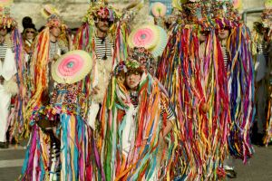

Žejane - An IstroRomanian Oasis

Do you speak Žejanski? Hardly, because that language is used by only 140 people in the small Croatian village of Žejane. This isolated IstroRomanian oasis is located between the Ćićarija and Opatija’s mountains, 600 meters above the sea level and for centuries has been holding on to its unique language and customs.
This is why for the Three Holy Kings Celebration we were on our way to Rijeka and from there on, 27 km north to Žejane. Driving through the forest on a cold and foggy January morning we thought this desolated road would take us to nowhere. After some time we got to an isolated village with old stone houses looking for signs of celebration because we knew the people of Žejane are the first to celebrate the Three Holy Kings.
The first to meet us was Mauro Doričić, the president of the local folk group and of the Žejanski bell ringers. During breakfast and coffee Mauro and his mother told us with pride about Žejane’s customs and traditions. "The unique things about our place are our roots and our language," Mauro’s mother told us while mixing in a bowl of polenta on an old stove. "Some people think we might be Romanians or Vlachs."
Historians think that this area was first settled in the 16th century by Vlach shepherds speaking Romanian and moving here pushed north by the invading Turks. They also think that this population came to Istria together with the Croats from Cetina and Velebit, and that no ethnographic differences existed between the two groups except for their language. The people of Žejane don’t know much about these events. In Mauro’s book, "Makso Peloza i Mune" the author Luje Margetića writes that the name Žejane was first mentioned in 1395 in Rašporskog urbara but it is not known if its inhabitants were Vlachs.
The roots of most last names in the village – Doričić, Stambulić, Sanković, Marmilić and Turković – are hard to connect with Romanian. The language spoken today has many words from German, Italian and Croatian aside from the old Romanian vocabulary. This dialect of Romanian is also spoken in a few villages south-west of Mount Učka (Šušnjevica, Nova Vas, Letaj...), but the people of Žejane don't really understand them. This is the reason why the people of Žejane speak "Žejanski," as most people like to call it. UNESCO's Red Book of Endangered Languages list IstroRomanian as a "seriously endangered language." "In the old days we all spoke it at home, our children knew it but today is slowly dying," told us in a sad voice Mauro's mother.
Mauro shows and gives us with great pride his CD "Ojajnina," produced in 2004. The CD includes songs from Žejane’s folk group repertoire sang in Žejanski. It is all about Polka, valcer and other holly and dance songs - songs performed in a time of celebration. We had to meet the people that put together this CD, so Mauro took us to the local cultural center.
The training of the local folk group, the "Žejanski zvončari" is bringing together the young and old of Žejane in their traditional costumes. We also got to know Boris Doričić from Žejane who for years has translated in the local dialect proverbs and riddles. He is reading and translating with great pride the old sayings in Žejanski to whomever is willing to listen. We wrote down one old saying: "Buovu se leaga de cuorne e uomu de limba" (Tie the ox by the horns and the man by the tongue). Boris’ brother, Cvetko Doričić Rado is an excellent player of several instruments and in his free time he is working to repair and put together and old harmonica. He shows us an old tamburica with two identical strings which he alone put together...
English translation: Vidoje Raguz

Žejane - istrorumunjska oaza
Govorite li žejanski? Teško, jer tim se govorom služi još samo preostalih 140 stanovnika malog hrvatskog sela Žejane. Ta izolirana istrorumunjska jezična oaza, smještena na mjestu gdje istočni rubni obronci Ćićarije prelaze u opatijski krš, na 600 m nadmorske visine, stoljećima čuva svoj specifični govor i stare običaje.
Upravo smo zbog njih na Sveta tri kralja ove godine krenuli put Rijeke, prema 27 kilometara udaljenim Žejanama. Vozeći se kroz šumu, toga hladnog, maglovitog siječanjskog jutra, činilo nam se da usamljena cesta ne vodi nikamo. Ipak, nakon nekog vremena stigli smo u pusto selo sivih kamenih kuća, i tražili naznake slavlja, veselja, fašnika, jer znamo da žejanski zvončari prvi započinju s pusnom feštom i prvi vješaju Pusta već na Sveta tri kralja.
Dočekao nas je i ugostio Mauro Doričić, voditelj mjesnog folklornog društva i žejanskih zvončara. Uz tople fritule i kavu, Mauro i njegova majka sa zanosom su nam pričali o žejanskim običajima. "Posebnost je našeg mjesta u podrijetlu i jeziku," tumačila je Maurova majka, miješajući palentu na starinskom štednjaku. "Neki misle da smo mi Rumunji ili Vlasi."
Povjesničari smatraju da su ovaj prostor, bježeći pred Turcima u 16 stoljeću, prvi naselili vlaški pastiri koji su govorili rumunjski. Pretpostavka je da su u Istru došli zajedno s Hrvatima s područja oko Cetine i Velebita, no nisu imali etnografskih posebnosti osim različitoga govora. Sami Žejanci ne znaju puno o tome. No u Maurovoj knjizi "Makso Peloza i Mune" autora Luje Margetića stoji da se ime Žejane javlja već 1395 godine u prijevodu Rašporskog urbara, premda se ne zna je li već tada selo bilo naseljeno Vlasima.
Podrijetlo najčešćih prezimena u selu – Doričić, Stambulić, Sanković, Marmilić i Turković – teško bi se moglo povezati s rumunjskim, no njihov govor koji danas uvelike ima primjesa njemačkih, talijanskih i hrvatskih riječi svakako vuče rumunjsko podrijetlo. U nekoliko sela jugozapadno od Učke (Šušnjevica, Nova Vas, Letaj...) također se govori rumunjskim povijesnim govorima, no Žejanci ih ne razumiju. Izvorni govor u Žejanama stoga je "žejanski," kako ga nazivaju mještani, premda je u Unescovu Crvenu knjigu ugroženih jezika upisan kao istrorumunjski, s naznakom "ozbiljno ugrožen". "Doma su ga nekad svi govorili, i djeca su ga znala, a danas polako zamire," potvrđuje nam s tugom u glasu Maurova mama.
Mauro nam ponosno pokazuje i daruje CD "Ojajnina" s pjesmama na žejanskom, koji je 2004 snimila žejanska folklorna grupa. Radi se o raznim prepjevima polki, valcera, duhovnih pjesama – melodijama izvođenima uglavnom za vrijeme proslava i pusnih svečanosti. Kako bismo upoznali ekipu zaslužnu za stvaranje ovog CD-a, s Maurom odlazimo u Dom kulture.
Na probi folklornog društva "Žejanski zvončari" okupljaju se mlađi i stariji Žejanci u narodnim nošnjama. Upoznajemo Borisa Doričića, Žejanca koji već godinama za svoju dušu na žejanski prevodi razne tekstove pjesama i sakuplja poslovice i zagonetke na žejanskom. Čita nam i prevodi stare poslovice uživajući u prilici da nekome predstavi žejanski govor. Zapisujemo jednu kako čujemo: "Buovu se leaga de cuorne e uomu de limba" (Vol se veže za rogove, a čovjek za jezik). Borisov brat, Cvetko Doričić Rado odlično svira nekoliko instrumenata, a u slobodno vrijeme restaurira stare harmonike. Pokazuje nam cindru – arhaičnu tamburicu s dvije jednako ugođene žice, koju je sam napravio...
Napisala Edita Gregurić-Cvenić
Snimio Goran Saletto
December 1, 2005
© 2005 National Geographic Hrvatska